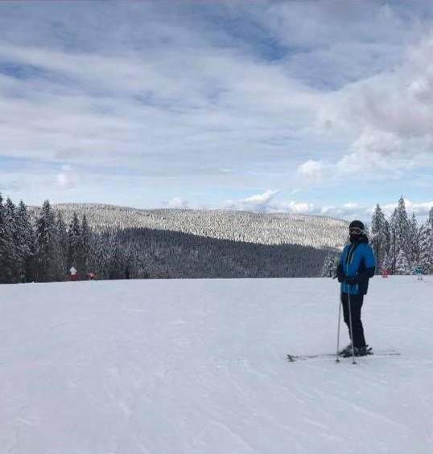

Divinyi-Zsoldos Tamás
portfólió
Rövid bemutatkozó  Síterep ajánlás kezdőknek
Síterep ajánlás kezdőknek  Munka és célok
Munka és célok  Elérhetőség
Elérhetőség 
Divinyi-Zsoldos Tamás vagyok a Budapesti Műszaki és Gazdaságtudományi Egyetem második féléves gépészhallgatója. Az egyetem mellett életem fontos részét képzi a sportolás, amely a mindennapjaim része. Ezt a hétköznapokban edzéssel valósítom meg, de kedvenc sportom a síelés amit csak évente néhány nap erejéig tudok kiélvezni. 3 éves koromban tanultam meg és azóta minden évben több alkalommal is kihasználom a lehetőséget ha el tudok menni. Célom, hogy az elkövetkező valamelyik télen kipróbáljam magam és síoktatással foglalkozzak egy szezonra, hogy más emberek is megtapasztalják mekkora örömet tud okozni ez a sport.
